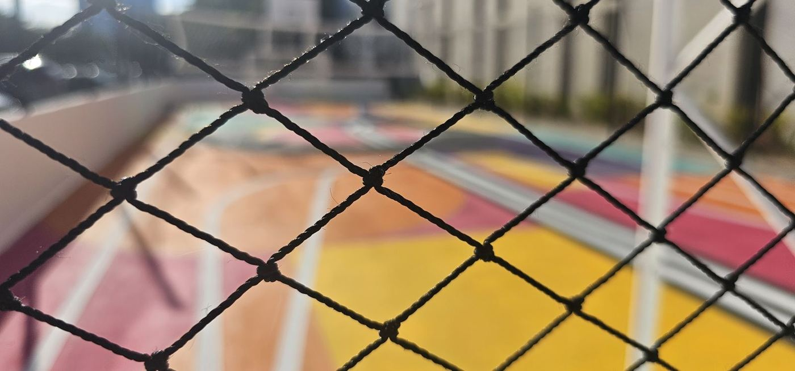
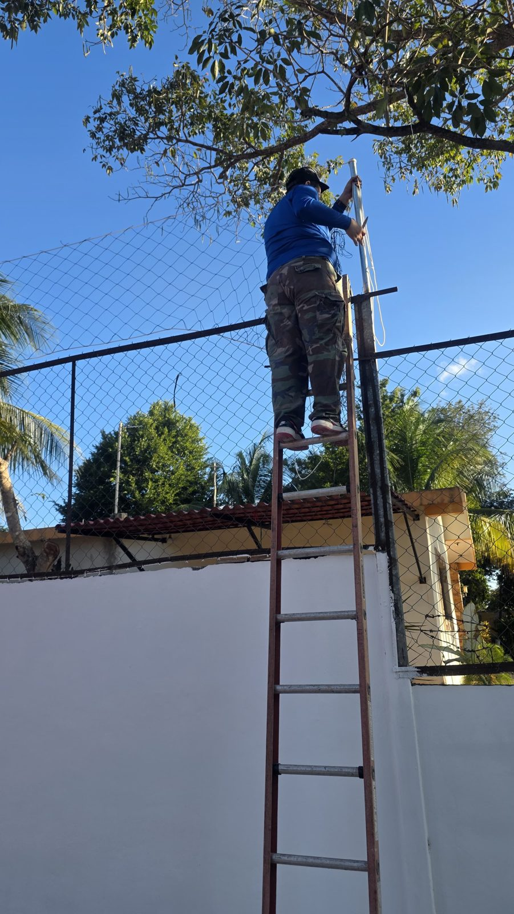
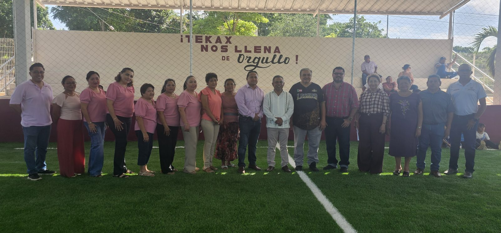

Así se ve instalada

Ficha técnica
- Rombo de 1 pulgada por lado.
- Cordón de nylon calibre 18 (1.8 mm), torcido de 3 hebras.
- Baño de alquitrán: resistente al sol y a la lluvia.
- Orilla reforzada con piola, que mantiene la forma de la red.
- Paños hechos a la medida. Más de 5 años de duración.

Pruebas de resistencia
Nuestra red se probó en un laboratorio textil acreditado. Estos son los resultados del informe:
- 1,800 N de resistencia a la tracción.
- Grado 5 en solidez del color a la luz: el sol no la decolora.
- Material 100% poliamida (nylon).
Fotos del producto





🚚 Envío a toda la repúblicaTe llega lista para colocar.
🛠️ Instalación en MéridaNosotros la colocamos.
📞 Asesoría para instalarPor teléfono o videollamada, hasta que quede.
Tu cotización te llega en el chat
Regresa a la conversación: ahí te mandamos tu cotización con la medida de tu cancha.
¿Prefieres WhatsApp? Escríbenos